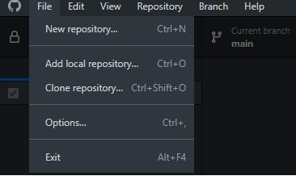
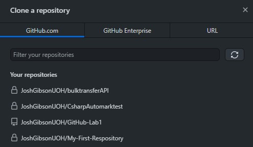
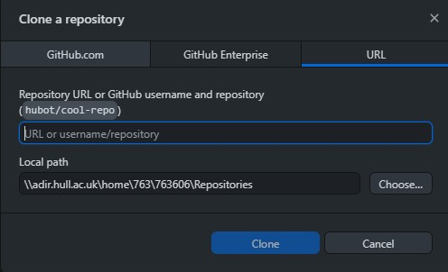
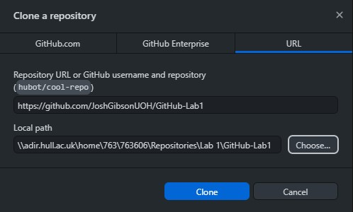
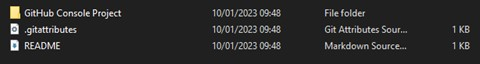

Ok! So now we have managed to be able to create a repository of our own locally and upload it to GitHub the next step is to find a repository on GitHub and make it accessible locally on our PC.
This is useful for various reasons, the first of which is collaborative working, as you may be joining a project after its inception, meaning that the repo that has been created. Or you may wish to use a tool, library or code that someone else has made to help you in a project that you are creating, in order to do this, you will need to create a local version of it that you can access.
To access a repository that already exists we must first navigate to the correct section in GitHub desktop. To do this we need to click File -> Clone Repository (alternatively you can use the CTRL+SHIFT+O shortcut)
 After accessing you will notice that the “Clone a Repository” window opens which gives you various options that you can access, the first of which are your current repos that exist on GitHub’s servers – this may only be GitHub-Lab1 for you if this is the first time you have accessed this, or you may have several repos present if you have been using Git for a while.
This is useful if we wish to access our repo on a new device we haven’t used before, allowing us to make a local copy. We can then make changes in a different environment, updating the server version when we have finished and making them accessible from anywhere – but more on this later!
For the purpose of this lab, you are going to create a local version of repository that I have created for you.
To do this you must click on the URL button that is present at the top of the Clone a repository window, which will take you to the clone a repository from URL window.
From here we first need to enter the URL of the GitHub repository that we wish to clone. For the purpose of this lab the URL you need is: https://github.com/JoshGibsonUOH/GitHub-Lab1
You should then create a folder named Lab 1” within your previously created local repos folder and alter the “Local Path” field to point towards it.
Then click the clone button.
*NOTE* GitHub can only create repositories in folders that do not currently have files within them, so if you are going to clone a repository you should pre-create a folder that will hold it within your repos folder.
If done correctly the UI will update to display that the repository is being cloned. And you will then be redirected to the familiar GIT repo window that appeared when you created your first repo, but you will notice that your current Repository is now “GitHub-Lab1”.
Open the folder that contains the files to ensure that the repo has cloned properly, and you should see a folder alongside the files generated by GIT.
If you see these, well done! You’ve cloned your first repository.